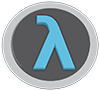

SketchPad b e t a
Written in Clojure
The entire application is written in Clojure and there are wrapper namespaces for all interop libraries used.
Leiningen
Creating and running Leiningen projects is dead simple. By using the project creation tool all available repos on Clojars.org are accessible with shorthand titles.
Standalone
By leveraging the power of Leiningen and the popularity of Clojars.org, projects can be created from dependencies stored on Clojars and used without any additional dependencies.
Syntax Highlighting for 30 languages
Using the RSyntaxTextArea library from fifesoft, the editor has support for all common languages with additional support for Java, C, C++, JavaScript, and more.

Customizable
Customizing SketchPad is as simple as editing a single default.clj file. All UI configurations and key bindings are accesible as well as editor themes from the ~/.sketchpad directory.
Powerful REPL
In addition to managing Leiningen based project REPL’s which run in external processes, SketchPad has an integrated application REPL. This REPL gives access to not only buffer data for scripting edits and macros but as well to the application it self.